Artichoke, Jerusalem pp. 12–13 · Approved
Added: Gerard.
Open this spread as a PDF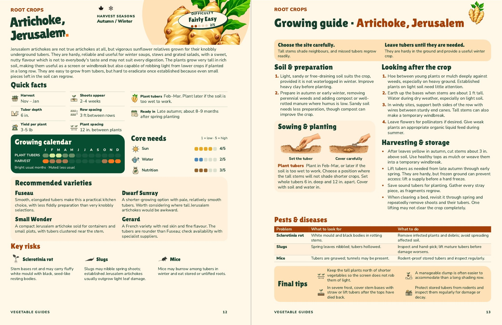
Read the added descriptions
Gerard
A French variety with red skin and fine flavour. The tubers are rounder than Fuseau; check availability with specialist suppliers.
Aubergine pp. 16–17 · Approved
Added: Black Beauty, Rosa Bianca.
Open this spread as a PDF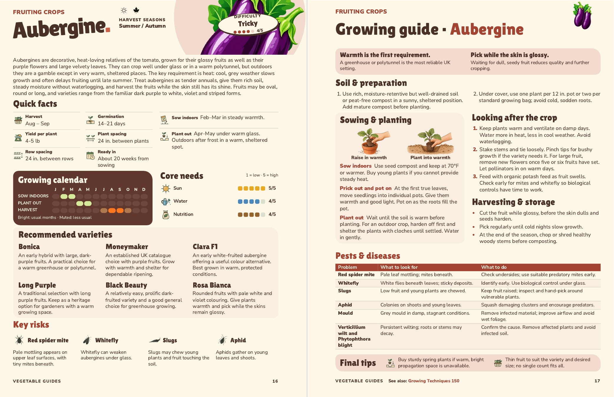
Read the added descriptions
Black Beauty
A relatively easy, prolific dark-fruited variety and a good general choice for greenhouse growing.
Rosa Bianca
Rounded fruits with pale white and violet colouring. Give plants warmth and pick while the skins remain glossy.
Beet, Leaf pp. 24–25 · Approved
Added: Lucullus, White Silver 2.
Open this spread as a PDFRead the added descriptions
Lucullus
Pale stems and crinkled green leaves. Pick the outer leaves regularly for a continuing crop.
White Silver 2
Broad green leaves and white, fleshy stalks. Useful for both leafy greens and cooked stems.
Beetroot pp. 26–27 · Approved
Added: Red Ace F1.
Open this spread as a PDF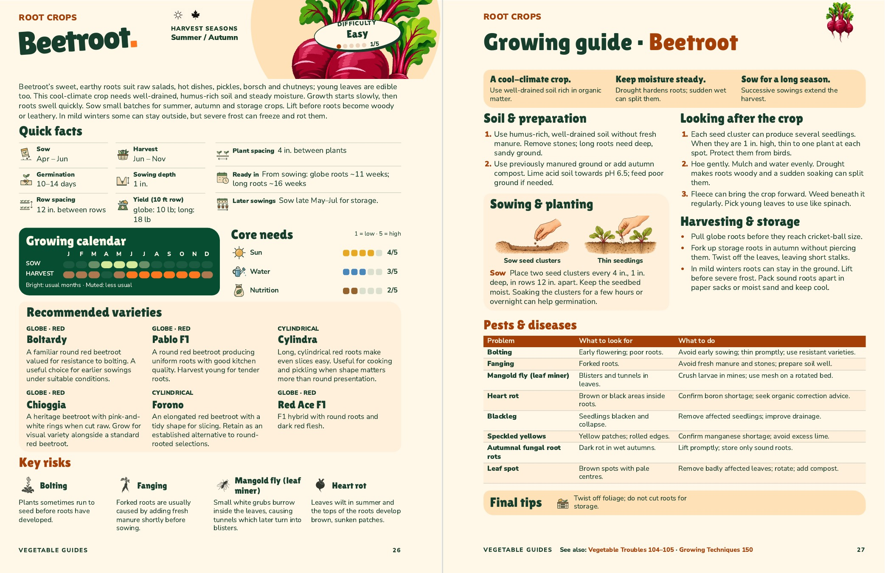
Read the added descriptions
Red Ace F1 · Globe · Red
F1 hybrid with round roots and dark red flesh.
Capsicum pp. 34–35 · Approved
Added: Gypsy F1.
Open this spread as a PDF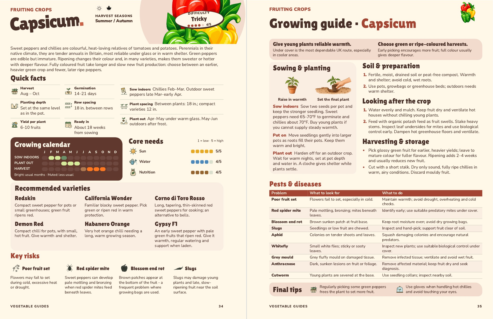
Read the added descriptions
Gypsy F1
An early sweet pepper with pale green fruits that ripen red. Give it warmth, regular watering and support when laden.
Carrot pp. 36–37 · Approved
Added: Amsterdam Forcing · Four-column variety panel.
Open this spread as a PDF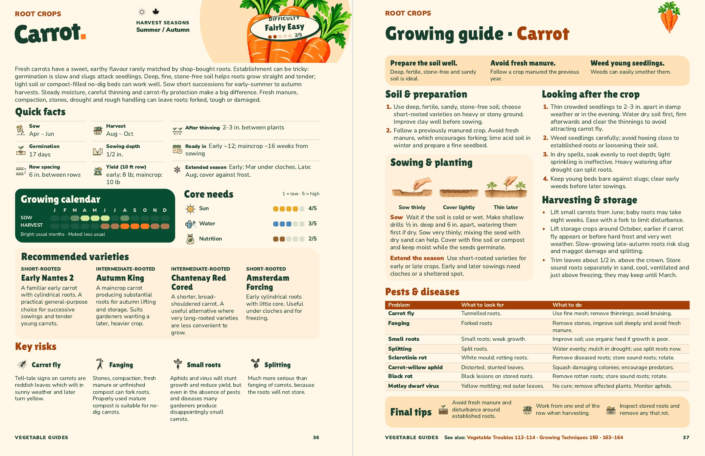
Read the added descriptions
Amsterdam Forcing · Short-Rooted
Early cylindrical roots with little core. Useful under cloches and for freezing.
Cucumber, Greenhouse pp. 48–49 · Approved
Added: Pepinex F1.
Open this spread as a PDF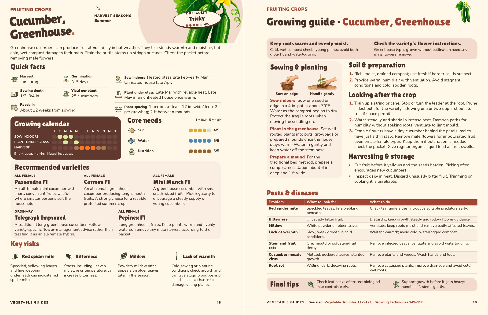
Read the added descriptions
Pepinex F1 · All female
Long greenhouse fruits. Keep plants warm and evenly watered; remove any male flowers according to the packet.
Endive pp. 52–53 · Approved
Added: Bubikopf · Four-column variety panel.
Open this spread as a PDF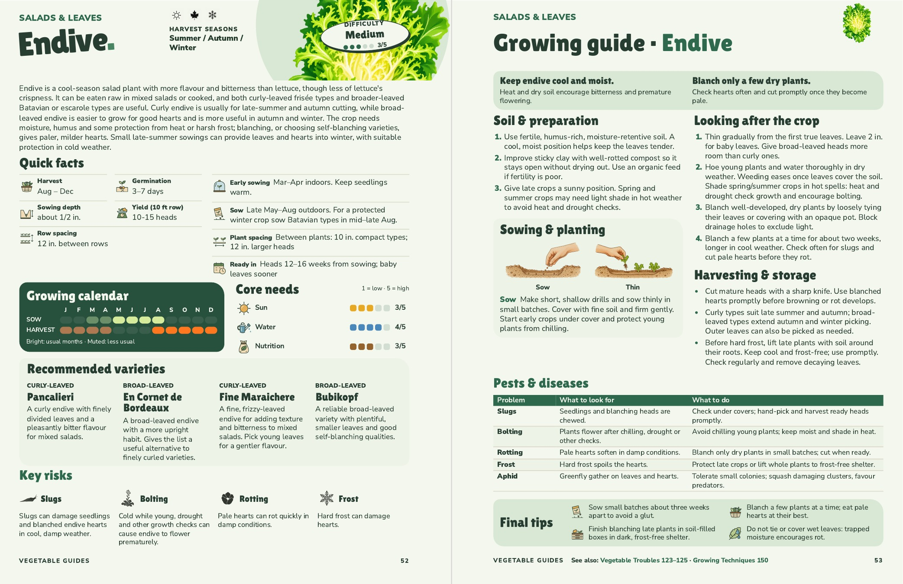
Read the added descriptions
Bubikopf · Broad-leaved
A reliable broad-leaved variety with plentiful, smaller leaves and good self-blanching qualities.
Florence Fennel pp. 54–55 · Approved
Added: Finale · Four-column variety panel.
Open this spread as a PDF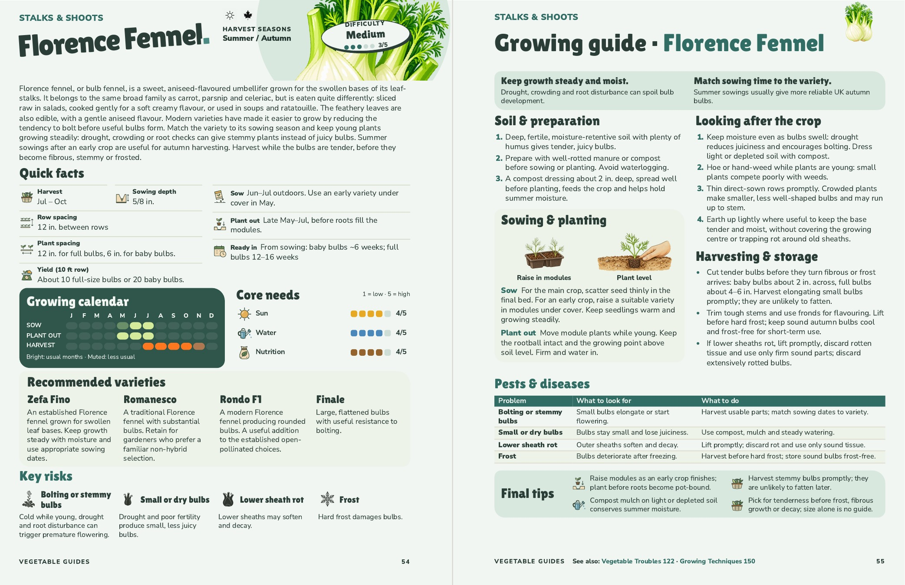
Read the added descriptions
Finale
Large, flattened bulbs with useful resistance to bolting.
Garlic pp. 56–57 · Approved
Added: Spanish Roja.
Open this spread as a PDF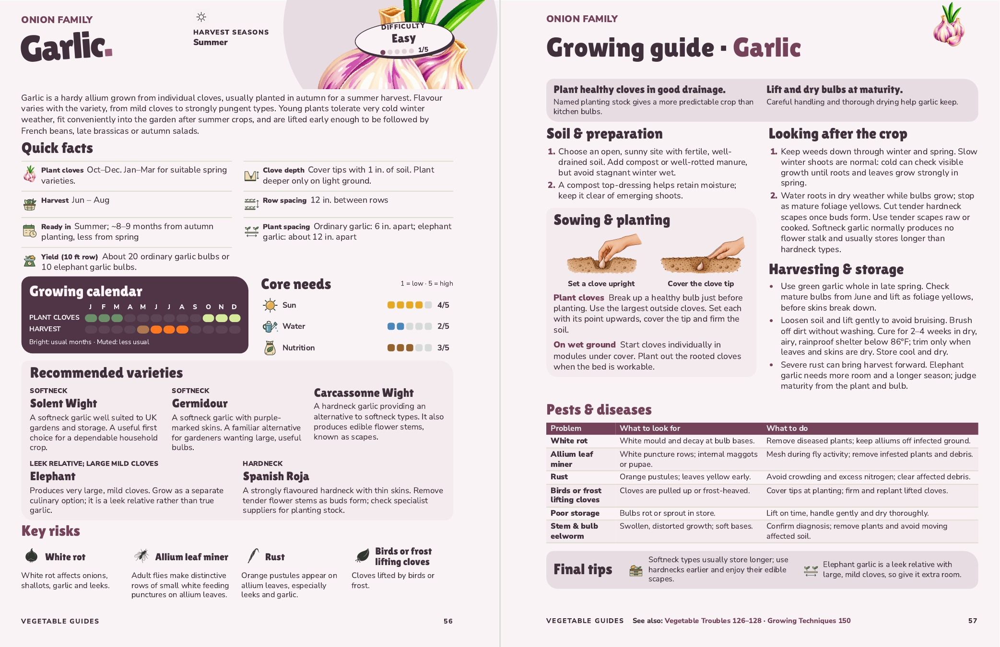
Read the added descriptions
Spanish Roja · Hardneck
A strongly flavoured hardneck with thin skins. Remove tender flower stems as buds form; check specialist suppliers for planting stock.
Lettuce pp. 64–65 · Approved
Added: Webb’s Wonderful.
Open this spread as a PDF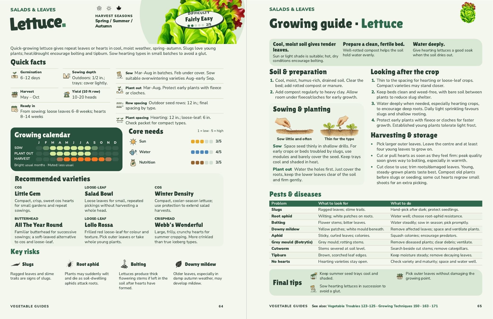
Read the added descriptions
Webb’s Wonderful · Crisphead
Large, frilly, crunchy hearts for summer cropping. More crinkled than true iceberg types.
Oriental Leaves pp. 70–71 · Approved
Added: Shungiku.
Open this spread as a PDF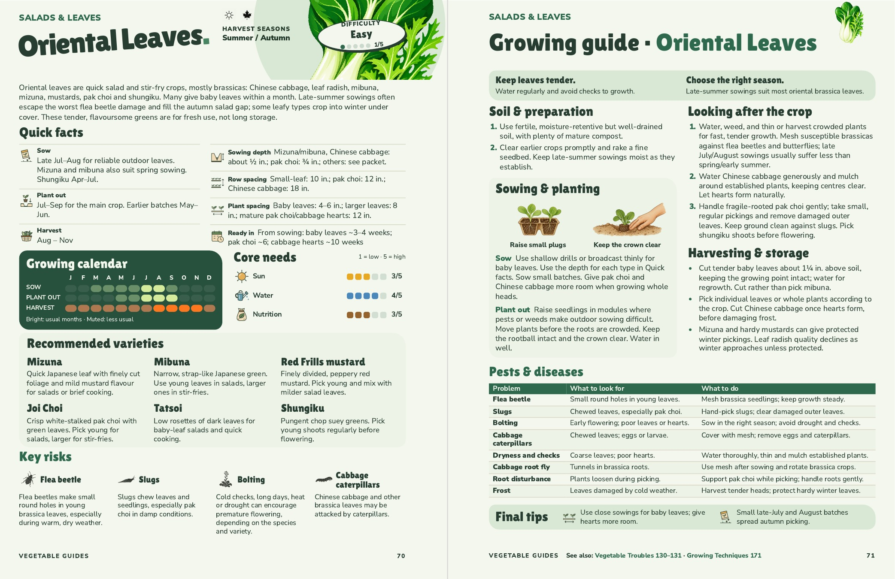
Read the added descriptions
Shungiku
Pungent chop suey greens. Pick young shoots regularly before flowering.
Turnip pp. 96–97 · Approved
Added: Snowball.
Open this spread as a PDF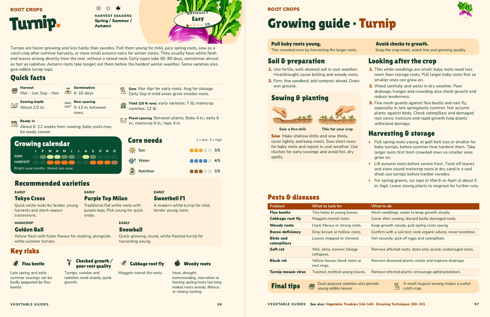
Read the added descriptions
Snowball · Early
Quick-growing, round, white-fleshed turnip for harvesting young.